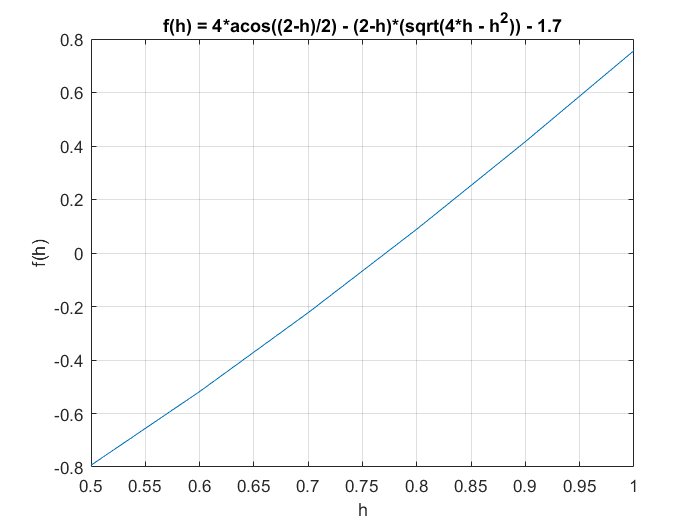
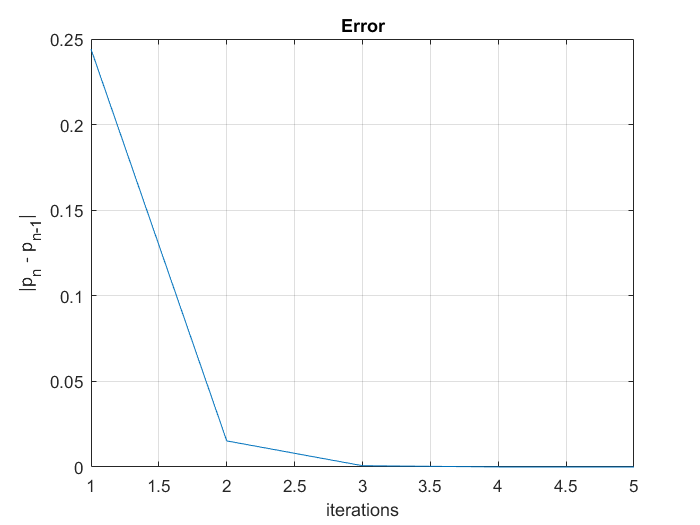

Contents
Function defination
f = @(h) 4*acos((2-h)/2) - (2-h)*(sqrt(4*h - h^2)) - 1.7;
a=0.5; b=1;
Plotting graph of f(y)
X = a:0.1:b;
Y = a:0.1:b;
n = 1;
for x = a:0.1:b
Y(n) = f(x);
n = n + 1;
end
plot(X,Y); grid on;
xlabel("h");
ylabel("f(h)");
title("f(h) = 4*acos((2-h)/2) - (2-h)*(sqrt(4*h - h^2)) - 1.7")

Stopping criterium
TOL=10^(-6);
format long;
old = b;
fa = feval(f,a);
fb = feval(f,b);
Nmax = 100;
Iteration scheme
pvalues=[]; flag =0;
for i = 1 : Nmax
new = b - fb * ( b - a ) / ( fb - fa );
fnew = feval(f,new);
fprintf ( '\t\t %3d \t (%.10f,%.10f) \t %.10f \n', i, a, b, new )
if ( abs(new-old) < TOL )
flag=1;
break
elseif ( fa * fnew < 0 )
b = new;
fb = fnew;
else
a = new;
fa = fnew;
end
error(i) = abs(new-old);
old = new;
pvalues = [pvalues;old];
end
1 (0.5000000000,1.0000000000) 0.7559087671
2 (0.7559087671,1.0000000000) 0.7711574965
3 (0.7711574965,1.0000000000) 0.7719060141
4 (0.7719060141,1.0000000000) 0.7719423707
5 (0.7719423707,1.0000000000) 0.7719441357
6 (0.7719441357,1.0000000000) 0.7719442214
Error plot "p_n - p_{n-1}"
figure; plot([1:5], error); grid on;
xlabel("iterations"); ylabel("|p_n - p_{n-1}|");
title("Error")

Printing results
fprintf('The approximate root is %.10f',new)
if flag == 0
disp(' Maximum number of iterations exceeded')
end
The approximate root is 0.7719442214